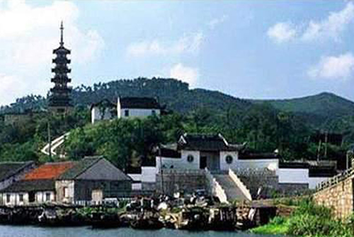
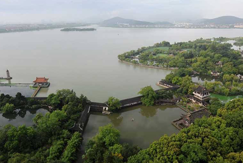
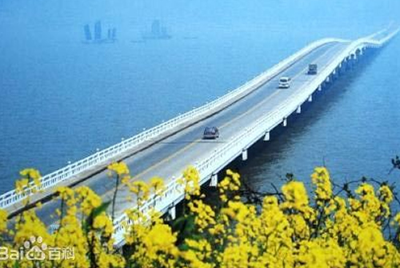
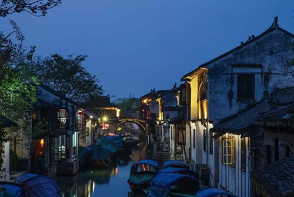

湖区概况
太湖湖水面积2338㎞²，湖面形仪西突的新月，西南部湖岸平滑呈圆弧形，东北部湖岸曲折多湖湾、山甲角。湖泊长68公里，最大宽度56公里。因泥沙淤积和人工围垦，一些岛屿分别与东、西庭山连体，近岸的则与湖岸相连成半岛，现尚存大小岛屿48座，以西洞庭山面积最大，为75㎞²。
太湖西和西南侧为丘陵山地，东侧以平原及水网为主。
景点介绍

光福景区
光福景区位于太湖东部渔港，由四组突入湖中的半岛和附近岛屿组成，占有太湖湖岸线最曲折窈窕的部分，是以植物胜景、宗教福地和湖湾渔港为特色的山水古镇型景区。景区内峰峦罗列，山水萦抱，景物清幽，文化古迹众多，是太湖山水的精华地区之一。景区现存的渔港、渔村……，以及渔汛季节的千帆竞发的景象是太湖风景名胜区具有代表性的独特景观。景区盛栽梅、桂等花木，植物景观丰富，是有名的花树山区，其典型的植物景观有：“清、奇、古、怪”、香雪海、木荷林等。

蠡湖景区
蠡湖景区由蠡湖及周边组成，是以近代园林、秀丽水景及滨湖湿地为特色的湖景型景区。蠡湖又名五里湖，为太湖北端之内湖，扼太湖之要冲。近代园林蠡园占东蠡湖一角，三面临水，借水构园。凡亭阁堤廊均依水傍湖，精致纤巧，优雅明丽。

甪直景区
甪直景区位于太湖东30公里，由甪直古镇组成，历来享有江南“桥都”的美称，是以江南水乡古镇和古桥系列景观为特色的古镇型景区。景区内历史文化遗存丰厚，古镇风貌完整，以古桥、商业古街和罗汉塑像占胜，古朴、繁荣、熙攘，历代人文荟萃，人才辈出。镇南2公里的张陵山有青莲岗文化类型与良诸文化类型的遗址。相传镇南的吴宫乡，为古吴王阖闾的离宫；吴王夫差又在镇西甫里塘北岸筑梧桐园。

同里景区
同里景区位于太湖东10公里，由同里古镇、同里湖、九里湖、南星湖、洋湖组成；是以古镇名园和水乡田园为特色的古镇湖景型景区。景区有着悠久而灿烂的历史文化，拥有“两堂三桥”、退思园、计成故居、耕乐堂、侍御古坊、环翠山庄等丰富而宝贵的历史遗存，明、清建筑多和名人雅士多。同里古镇是以住宅园林和明清民居为主的典型江南水乡古镇，退思园被列入“世界文化遗产”名录。